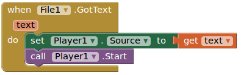

Eco, ecoooo....
Objetivos
- Poder grabar sonidos con el móvil y reproducirlos
Actividad
Entra en AppInventor y crea un proyecto nuevo llamado "echo".
Cambia la propiedad "AlignHorizontal" de "Screen1" a "center".
Usando componentes "Label", crea una serie de instrucciones en la pantalla como estas:
Añade un componente "HorizontalArrangement" de la categoría "Layout". Cámbiale estas propiedades:
- AlignHorizontal: Center
- Ancho: "Fill Parent".
Arrastra dos botones al "HorizontalArrangement1". Se colocarán automáticamente uno al lado del otro.
Renómbralos como "ButtonRecord" y "ButtonStop" y asígnales los textos "Record" y "Stop" respectivamente.
Ahora de la clase "Media", añade un componente "SoundRecorder" y otro componente "Player". (Los dos son no visibles)
Vamos a programar en el apartado de "Blocks".
Cuando se haga click sobre el botón "ButtonRecord" el componente "SoundRecorder1" debe empezar a grabar:
Cuando se haga click sobre el botón "ButtonStop" el componente "SoundRecorder1" debe parar de grabar:
Ahora usaremos un evento de "SoundRecorder1" para que cuando se haya grabado un sonido se lo mande a "Player1" y éste lo reproduzca:
Y ya tenemos nuestro programa que hace eco de lo que grabemos. Pruébalo en tu móvil.
Ampliación
Vamos a modificar el prorgama anterior para mantener el último sonido que hayamos grabado y reproducirlo tantas veces como queramos.
Añade un Botón llamado "ButtonPlay" con la propiedad "Text" a "Play":
Añade un componente "File" del apartado "Storage" (es no visible):
Ve a la vista de programación "Blocks". Modifica las instrucciones que reproducen el sonido cuando "SoundRecorder1" ha acabado de grabar para que el sonido se grabe en un fichero temporal (el fichero se sobreescribirá cada vez que grabemos algo):
Ahora cuando se le da al botón "ButtonPlay", se debe leer lo que había guardado en el fichero temporal:
Y por último, cuando se ha leido el fichero completamente se le debe decir al reproductor "Player1" que lo reproduzca:

Y ya tienes una grabadora de sonidos en tu móvil.
Obra publicada con Licencia Creative Commons Reconocimiento No comercial Compartir igual 3.0

Programando en AppInventor por Francisco Nevado Montero se distribuye bajo una Licencia Creative Commons Atribución-NoComercial-CompartirIgual 4.0 Internacional.